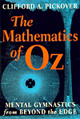

Ferris Wheels
- three term spirographs
Random spirograph patterns using three terms instead of two. I call these Ferris Wheels. You can see the three arm linkage as the pattern is drawn. The arms are of length 102, 51 and 34.
The first arm always rotates left (counter clockwise).
The second and third arms can rotate in either direction. They
can also each be out of phase by 0 or 180 degrees.
The arms (R, S and T) are given random 'speeds'. An RST of 1 2 -3 means by the time the first arm completes one revolution, the second arm will have completed two revolutions, and the third arm three in the opposite direction. This information is displayed at the bottom of the screen. Also displayed is the phases of arms S and T.
To New
# set default screen, pen and turtle values
ResetAll SetScreenSize [400 400] HideTurtle
SetSC Black SetPC Green SetPS 1 PenUp
End
To Init
Make "R Pick [1 2]
Make "S (Pick [-1 1]) * Pick [3 5 7]
Make "T (Pick [-1 1]) * Pick [ 11 13 17 19 23]
Make "V Pick [0 180]
Make "W Pick [0 180]
End
To Display
# write header title and footer values
SetPC White
SetPos [-190 184] Label [Ferris Wheel]
SetPos [-190 -190] Label ( List "RST "= :R :S :T )
SetPos [110 -190] Label ( List "STp "= :V :W )
End
To Hue2 :Theta
# Output RGB hue list from angle :Theta
Make "Red Abs 255*Sin :Theta
Make "Green Abs 255*Sin (:Theta+120)
Make "Blue Abs 255*Sin (:Theta+240)
Output (List :Red :Green :Blue)
End
To DrawArms :Angle
SetTurtle 0 PenUp SetPos [0 0] PenDown
SetH 0 Left :R*:Angle Forward 102
SetH 0 Left (:S*:Angle) +:V Forward 51
SetH 0 Left (:T*:Angle) +:W Forward 34
Make "myPos Pos
End
To Ferris
SetTurtle 1 PenUp SetPos :myPos PenDown
For [Angle 1 360] [
DrawArms :Angle
SetTurtle 1
SetPC Hue2 :Angle
SetPos :myPos
Wait 2 DrawArms :Angle]
End
To Go
Forever [
New Init Display
SetPC White DrawArms 0 Wait 60 SetPC Black DrawArms 0
SetPC White PX
Ferris Wait 60
#Make
"W :W+180 DrawArms 0 DrawArms 0 Ferris
Wait 180]
End
Uncomment the line in Go procedure for second overlaid pattern.
- Animation
- Art
- Cellular Auto
- Coding
- Demo
- Dot Plot
- Fractal
- Grid
- Illusion
- L-System
- Multi Turtle
- One Line
- Perspective
- Plane Filling
- Polar
- Puzzle
- Recursion
- Sound
- Spiral
- Spirograph
- Trees
- Walks


Ferris Wheels
Book Info

Pages 124-126
Procedures blue
Variables pink
Comments green
Library gray

Visit XLogo
web site